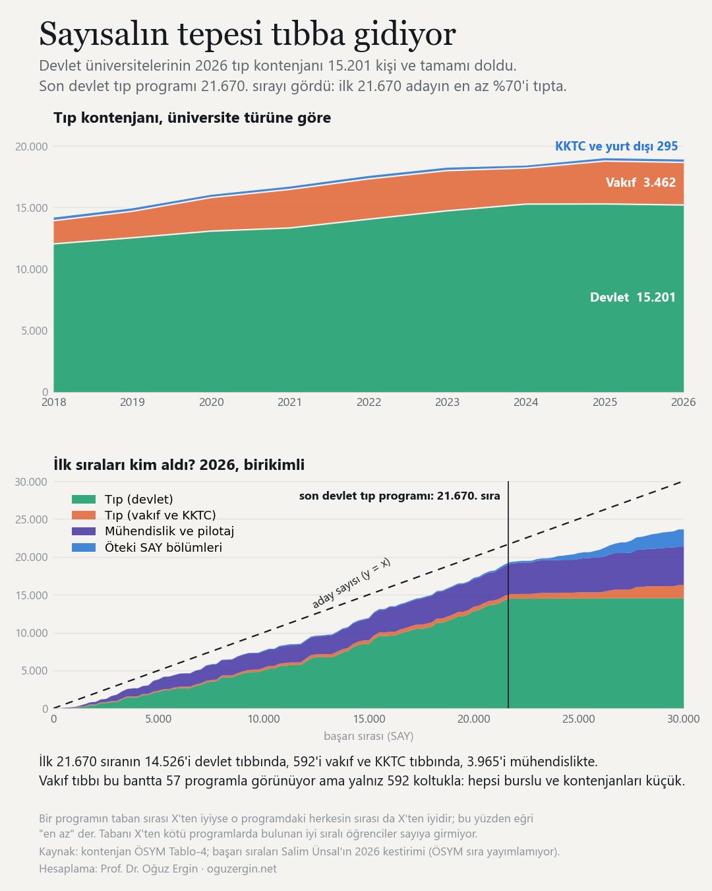
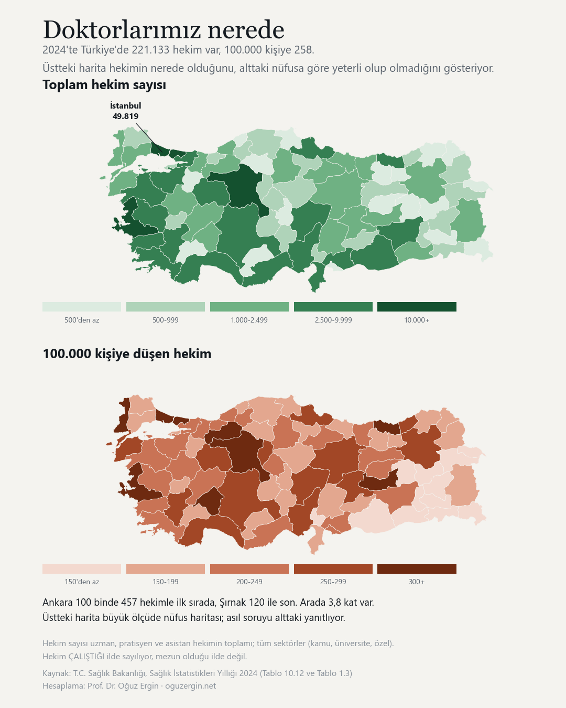
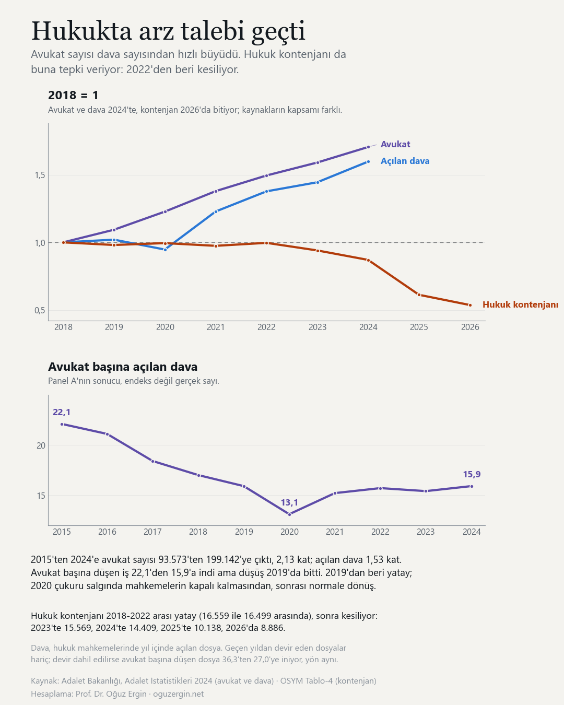

Kaç kişi girdi, kaç kişi yerleşti?
Sayfanın geri kalanı hangi bölümün nereye gittiğini anlatıyor. Bu bölüm çerçeveyi kuruyor: her yıl sınava kaç kişi giriyor, kaç koltuk açılıyor, kaçı doluyor.
İki ucu karşılaştırmak yetmiyor, aradaki tepe kayboluyor. Aday sayısı 2018 ile 2026'da neredeyse aynı, ama arada üç milyona çıkıp geri döndü. Kontenjan tarafında böyle bir tepe yok, 2023'ten sonra kesintisiz daralıyor. Sayfadaki “sıralar iyileşti” bulgularının arkasındaki ilk mekanizma bu makas.
Satırlar kendi içinde renklendirildi ki hareket sayıya bakmadan da görünsün: koyu hücre o satırın büyük değeri. Renk ailesi öbeği ayırıyor, aday tarafı mavi, lisans mor, önlisans yeşil, toplamlar hardal. Koyuluk satır içinde ölçekli; iki satırın koyuluğu birbiriyle karşılaştırılamaz.
Kontenjan kimde?
Aynı yıllar, aynı hizada. Üstteki çizelgenin daralan kontenjanı tek parça değil: kesinti devlette, büyüme vakıfta. Doluluk da onu izliyor.
Dikey geçiş
Üniversiteye giren herkes bu sınavdan gelmiyor. Önlisans mezunlarının lisansa geçtiği dikey geçiş ayrı bir sınav ve ayrı bir kontenjan; büyüklüğü görünsün diye aynı yıl ekseninde veriliyor.
Dikey geçişte talep çöküyor. Tercih yapan aday sayısı önce yükselip sonra yarıdan fazlasını kaybetti; örgün kontenjan aynı ölçüde daralmadığı için doluluk da düştü. Sayılar çizelgenin altında.
İlk 100 programda hangi bölümler var?
Her yıl seçili puan türündeki bütün lisans programları taban puanına göre sıralanıyor, ilk 100'ü bölüm bölüm sayılıyor. Koyuluk program sayısıyla orantılı.
Paylaşım kartı: seçili puan türünün ilk 100 program çizelgesi.
Görseli indirProgram sayısı mı, koltuk sayısı mı?
Üstteki çizelge program sayıyor, oysa programlar boyut olarak çok farklı. Aynı listeyi kontenjanla ağırlıklandırınca tablo değişiyor: bir öbek listede çok yer kaplarken az öğrenci alıyor olabilir.
Üniversiteler yer değiştirdi mi?
Her bölümde taban puanına göre ilk 20 üniversite, 2018'den 2026'ya. Her çizgi bir üniversite; dikey eksen sıra, en üstte birinci. Soldaki sütun 2018 sıralaması, sağdaki 2026; soluk yazılanlar ilk 20'den düşmüş kurumlar. Bir kurumun birden çok programı varsa en yüksek puanlısı alındı. Çizginin üzerine gelin, ötekiler soluklaşsın.
Grafik geniş, yana kaydırarak tamamını görebilirsiniz.
Paylaşım kartı: seçili bölümün ilk 20 üniversitesi, 2018-2026.
Görseli indirBaşarı sırası: dokuz yılın tam çizelgesi
Aynı ilk 20, bu kez sayılarla. Yeşil hücre programın en iyi yılı. "Zirveden" sütunu 2026 sırasının o yıla göre kaç katı olduğunu gösterir; asıl soru bu, çünkü çoğu bölümde sıralar önce iyileşiyor sonra bozuluyor.
Paylaşım kartı: seçili bölümün başarı sırası çizelgesi.
Görseli indirHangi bölümler yükseldi, hangileri düştü?
Ölçü, programa giren en düşük puanlı öğrencinin Türkiye başarı sırası. Her yıl bir öncekiyle ayrı ayrı eşleştiriliyor (aynı program kodu, kendisiyle karşılaştırılıyor), sonra yıllık oranlar çarpılarak dokuz yıllık seri kuruluyor. 2018 = 1,00; 2 demek sıraların iki katına çıktığı, 0,5 demek yarıya indiği.
Seri ülkeye bölünmüş veriliyor, çünkü kontenjan daraldığı için bu dönemde tipik programın sırası kendiliğinden iyileşti: ülke 2026'da 0,78. Bölünmeseydi yerinde sayan bölüm iyileşmiş görünürdü. 1'in üstü ülkeden kötü, altı iyi.
Üç liste var, çünkü 2018'e göre net değişim tek başına yanıltıyor: bazı bölümler önce yükselip sonra çöküyor ve nette orta hâlli görünüyor. Bilgisayar mühendisliği 2018'de 1,00, 2023'te 0,53, bugün 1,28; 83 bölüm içinde 60. sırada duruyor ama zirvesinden 2,41 kat uzakta. İlk liste bu yüzden zirveye göre sıralı.
Sıra aday sayısına bölünmüyor. Öğrenciler listenin tepesinden seçim yapıyor; havuzun altına aday eklenmesi bir programın karşılaştığı rekabeti değiştirmiyor. Bölseydik yanlış çıkardı: aday havuzu bu dönemde dil puanında %51, sayısalda %25 büyüdü ve turizm rehberliği "en çok yükselen bölüm" gibi görünüyordu. Ham sıra mutlak, beş bininci aday kaç kişi sınava girerse girsin aynı yerde.
İlk 20 bini kim aldı?
Buraya kadarki bölümler programları saydı. Bu bölüm öğrenci tarafına bakıyor: sayısalda en iyi 20 bin adayın kaçı hangi bölüme gitti, dokuz yılda bu nasıl değişti?
Ölçüt tıp bölümündekiyle aynı mantıkta ve yine alt sınır: taban başarı sırası 20.000'den iyi olan programların yerleşen toplamı sayılıyor. Tabanı 20.000'den kötü programlardaki iyi sıralı öğrenciler bu sayıya girmiyor, o yüzden gerçek pay buradakinden yüksek olabilir. Yalnız sayısal, çünkü başarı sırası puan türü içinde hesaplanıyor; sayısalda 15.000. sıra ile eşit ağırlıkta 15.000. sıra aynı öğrenci değil.
Paylaşım kartı. Aynı sayılar, tek görselde. Tıklayınca tam boy açılır.
Görseli indir{kind=link}
Tıp: kontenjan ve ilk sıralar
Devlet üniversitelerinin tıp kontenjanı dokuz yılda büyüdü ama 2024'ten beri yerinde sayıyor. Çizelgenin son satırı aynı yıl ekseninde 100 bin kişiye düşen hekimi veriyor: 2018'de 187, 2024'te 258. Kontenjanın stoka yansıması gecikmeli, ikisi yan yana okunmalı. Altta da 2026'da en yüksek sıraları kimin aldığı.
İlk sıraları kim aldı? (2026)
Bir programın taban sırası X'ten iyiyse o programdaki herkesin sırası da X'ten iyidir. Öyleyse aşağıdaki sayılar, ilk X aday içinde o bölümlere gidenlerin alt sınırıdır; tabanı X'ten kötü programlardaki iyi sıralı öğrenciler sayıya girmiyor.
Son devlet tıp programı 21.670. sırayı gördü. Tıbbın payı bantla birlikte artıyor: ilk 2.000'de %29,1, ilk 5.000'de %47,6, ilk 10.000'de %54,0, ilk 21.670'te %69,8. Tepedeki iki binde mühendislik tıbba yakın; tıbbın ağırlığı 5.000'den sonra kuruluyor. 30.000'e çıkınca pay %54,4'e iniyor, orada diş hekimliği ve eczacılık devreye giriyor.

Paylaşım kartı: devlet ve vakıf tıp kontenjanı, ilk sıraların dağılımı.
Görseli indir{kind=link}
Öğretmenlik
Öğretmenlik tek bir bölüm değil, dört ayrı puan türüne dağılmış yirmi beş bölüm. Sınıf öğretmenliği eşit ağırlıktan, okul öncesi sözelden, ilköğretim matematik sayısaldan, İngilizce öğretmenliği dil puanından öğrenci alıyor. Bu yüzden çizelgeler puan türü türü veriliyor ve türler toplanmıyor: başarı sırası puan türünün kendi içinde hesaplanıyor, sözelde 20.000. sıra ile sayısalda 20.000. sıra aynı öğrenci değil.
Dokuz yılda kontenjan 39.912'den 25.382'ye indi, üçte birinden çoğu kesildi. Kesinti her türde aynı değil ve asıl kırılma sayısal tarafta: 2024'te sayısal öğretmenlik programlarının doluluğu %51,6'ya düştü. Fen bilgisi öğretmenliğinde doluluk 2023'te %87,1 iken 2024'te %29,6; kontenjan o günden bugüne 2.763'ten 1.039'a inmesine karşın doluluk hâlâ %40,9.
Kontenjan nasıl değişti?
Taban sıraları hangi banda düşüyor?
Her hücre o yıl o bantta açılan koltuk sayısı, altındaki yüzde o yılın toplamındaki payı. Bant, programın taban başarı sırasına göre veriliyor: bir program “ilk 1.000” bandındaysa o programa girebilmek için sırasının 1.000'den iyi olması gerekiyordu.
Her program bir nokta
Çizelge koltukları bantlara topluyor; burada toplama yok. Seçilen bölümün her programı ayrı bir nokta, dikey eksen taban başarı sırası, nokta büyüklüğü o programın kontenjanı. Üzerine gelince üniversite adı çıkıyor.
Grafik geniş, dar ekranda yana kaydırarak tamamını görebilirsiniz.
Temel bilimler
Matematik, fizik, kimya, biyoloji, istatistik ve yakın bölümler. Neredeyse tamamı sayısal puan türünde, o yüzden tek çizelge yetiyor.
Buradaki hikâye kontenjanda değil, kimin geldiğinde. Temel bilimlerin kontenjanı dokuz yılda 15.716'dan 15.650'ye, yerinde saydı; doluluk da 2026'da %97,8. Ama koltukların yarısından çoğu her yıl 500 binden kötü sıralı adaylarla doluyor. İlk 10.000 sıraya giren koltuk sayısı 2026'da 60 kişi, toplamın binde dördü.
Kontenjan nasıl değişti?
Taban sıraları hangi banda düşüyor?
Her hücre o yıl o bantta açılan koltuk sayısı, altındaki yüzde o yılın toplamındaki payı. Bant, programın taban başarı sırasına göre veriliyor: bir program “ilk 1.000” bandındaysa o programa girebilmek için sırasının 1.000'den iyi olması gerekiyordu.
Her program bir nokta
Çizelge koltukları bantlara topluyor; burada toplama yok. Seçilen bölümün her programı ayrı bir nokta, dikey eksen taban başarı sırası, nokta büyüklüğü o programın kontenjanı. Üzerine gelince üniversite adı çıkıyor.
Grafik geniş, dar ekranda yana kaydırarak tamamını görebilirsiniz.
Dört temel bilim yan yana
Aynı gösterim, bu kez dört bölüm tek eksende ve ayrı renklerde: matematik, fizik, kimya ve biyoloji. Her yılın içinde dört bulut yan yana duruyor, kalın çizgiler o bölümün o yıldaki ortancası. Biyoloji tarafı birleşik: moleküler biyoloji ve genetik, biyokimya, biyoteknoloji ve moleküler biyoteknoloji tek seride.
Grafik geniş, dar ekranda yana kaydırarak tamamını görebilirsiniz.
Haritada: tıp kontenjanı ve hekim
Üç ayrı soru, aynı harita. Koltuk nerede, meslek sahibi nerede, ve nüfusa göre ne kadar. Üçü aynı yerler değil.
Tıp kontenjanında İstanbul birinci (3.730 koltuk) ama ortanca taban sırası en kötü olan il de o (27.304). Ankara 2.706 koltukla ikinci ve ortancası 5.590. Farkı vakıf üniversitelerinin yarım burslu kontenjanları kuruyor.
Hekim tarafında ise mutlak sayı büyük ölçüde nüfusu tekrarlıyor; asıl soruyu 100 binde hekim yanıtlıyor. Ankara 457, Şırnak 120, arada 3,8 kat. 81 ilin yalnız biri OECD ortalamasını (389) geçiyor.
Harita geniş, dar ekranda yana kaydırarak tamamını görebilirsiniz.
Paylaşım kartı: tıp kontenjanı ve ortanca taban sırası, il il.
Tıp haritasını indir{kind=link}

Paylaşım kartı: hekim sayısı ve 100 binde hekim, il il.
Hekim haritasını indir{kind=link}
Hukuk: avukat sayısı ve iş yükü
Avukatta eşitsizlik hekimdekinden sert. Ankara 100 binde 481, Muş 52, arada 9,3 kat var; hekimde bu fark 3,8 katta kalıyor.
Asıl hikâye ise haritada değil, arz tarafında. 2015'ten 2025'e baroya kayıtlı avukat sayısı 93.573'ten 206.678'e çıktı, 2,21 kat. Nüfus artışı bunun küçük bir kısmını açıklıyor: aynı dönemde Türkiye nüfusu %9,3 büyüdü, 100 bin kişiye düşen avukat sayısı 118,8'den 240,1'e çıktı, yine iki katından fazla. Aynı dönemde hukuk mahkemelerine gelen dosya 1,54 kat arttı, avukattan yavaş; avukat başına düşen dosya 36,3'ten 25,3'e indi.
Büyüyen yalnız avukat tarafı. Aynı on bir yılda hâkim sayısı 10.382'den 18.386'ya (1,77 kat), savcı 4.908'den 8.518'e (1,74 kat) çıktı; avukat ise 2,21 kat. Bir hâkime düşen avukat 9,0'dan 11,2'ye yükseldi. Mesleğe giriş kapısı yalnız barolar tarafında genişledi, yargı kadrosu aynı hızda büyümedi.
Buna karşılık hâkimin iş yükü avukatınki kadar hafiflemedi: adlî yargı ilk derecede hâkim başına gelen dosya 914'ten 802'ye indi (0,88 kat), avukat başına düşen ise 36,3'ten 25,3'e (0,70 kat). İki ölçütün kapsamı aynı değil, aşağıda yazılı; oranları birbirine bölmeyin. Ölçek farkı da yanıltmasın: bir hâkim yılda sekiz yüz dosyaya bakıyor, avukat sayısı çok daha kalabalık olduğu için kişi başına düşen dosya küçük çıkıyor.
2025 iki yönden birden ayrışıyor. Avukat sayısı büyümeyi sürdürürken gelen dosya 2020'den bu yana ilk kez azaldı (5.369.402'den 5.230.402'ye), açılan dosya da (3.173.045'ten 3.010.106'ya). İkisi birleşince avukat başına düşen iş on bir yılın en düşük düzeyine indi. Aşağıdaki harita 31 Aralık 2024 listesinden, çünkü kişi başı oranın paydası olan il nüfusu 2024 yıllığından geliyor; yıl serisi ülke toplamı olduğu için 2025'e uzanıyor.
Kontenjan tarafı ters yöne dönmüş durumda. 2018-2022 arasında hukuk kontenjanı 16 binin üzerinde yatay seyretti; kesinti 2023'te başladı, asıl kırılma 2025'te oldu (14.409'dan 10.138'e). 2026'da 8.886 kaldı, 2022'ye göre %46 daha az. Program sayısı ise 189'dan 166'ya indi, yalnız 23 azaldı: kontenjan program kapatılarak değil, açık programların koltuğu kısılarak düşürüldü.
Harita geniş, dar ekranda yana kaydırarak tamamını görebilirsiniz.

Paylaşım kartı: avukat, dava ve hukuk kontenjanı tek görselde.
Görseli indir{kind=link}
Mühendis mi, avukat mı? 1991'de sorulmuş bir soru
Buraya kadarki bütün bölümler bir ülkenin gençlerinin nereye gittiğini ölçtü. Aynı soru iktisat alanyazınında da sorulmuş. Kevin Murphy, Andrei Shleifer ve Robert Vishny 1991'de Quarterly Journal of Economics'te çıkan “The Allocation of Talent: Implications for Growth” makalesinde şunu savunuyor: bir ülkenin en yetenekli insanları üretimi büyüten işlere giderse ülke büyür, var olan pastayı yeniden bölüştüren işlere giderse büyümez.
Savı sınamak için iki vekil ölçüt seçiyorlar. Üretim tarafının vekili mühendislik, yeniden bölüşüm tarafının vekili hukuk. UNESCO'nun 1970 verisinden her ülke için mühendislik öğrencilerinin toplam yükseköğretim öğrencisine oranını ve aynı oranı hukuk için hesaplayıp, 91 ülkenin 1970-1985 arasındaki kişi başı gelir büyümesini bunlarla açıklıyorlar. Sonuç, işaretler bakımından savı destekliyor: mühendislik katsayısı +0,054 (standart hata 0,027), hukuk −0,031 (0,025). Öğrenci sayısı 10 binin üzerindeki 55 ülkeye bakıldığında ikisi de büyüyor: +0,125 (0,037) ve −0,065 (0,049). Yazarların kendi çevirisiyle, kayıtların fazladan %10'u mühendisliğe kaysa büyüme yılda yaklaşık %0,5 artıyor, hukuka kaysa %0,3 azalıyor.
Makale kendi sonucunu bu kadar rahat okumuyor, biz de okumayalım. Yazarlar bu ilişkileri yapısal olarak yorumlayamayacaklarını açıkça yazıyor. Barro'nun büyüme denklemine eklendiğinde mühendisliğin doğrudan etkisi 91 ülkelik örneklemde işaret değiştirip anlamsızlaşıyor; etkinin büyük kısmı dolaylı, çünkü mühendislik payı yüksek ülkeler aynı zamanda çok yatırım yapan, ilkokullaşması yüksek, kamu tüketimi düşük ülkeler. Yazarların özeti şu: bu ülkeler doğru şeylerin hepsini aynı anda yapıyor. Hukukun etkisi ise neredeyse tamamen doğrudan çıkıyor.
Ölçüt basit olduğu için Türkiye'nin aynı iki oranını hesaplamak mümkün. Aşağıdaki çizelgenin ilk iki satırı ÖSYM yerleştirme sonuçlarından, makaledeki tanımla:
Buradan sonrası makalenin göremediği yer. Ölçüt kafa sayıyor, hangi kafanın nereye gittiğini sormuyor. Çizelgenin üçüncü satırı bu sayfanın kendi bulgusu: mühendisliğin toplam içindeki payı dokuz yıldır yerinde dururken, sayısalın ilk 20 bini içindeki payı önce yükselip sonra düştü. Aynı sayıda koltuk, farklı öğrenci. 1991'in ölçütü bu iki durumu birbirinden ayırt edemez, oysa bir ülkenin en iyi öğrencilerinin mühendisliği seçip seçmemesi makalenin asıl sorduğu şey.
İkinci boşluk daha büyük: tıp bu çerçevede hiç yok. Murphy, Shleifer ve Vishny'nin dünyasında iki kutu var, üretenler ve bölüşenler; hekim ikisine de girmiyor. Türkiye'de ise sayısalın tepesindeki her üç kişiden ikisi tıbba gidiyor (ilk 20 bin bölümü). Bir ülkede en yetenekli gençlerin çoğunluğu ne mühendislik ne hukuk seçiyorsa, bu iki oran o ülkenin yetenek dağılımını anlatmakta yetersiz kalır. Makalenin sorusu hâlâ yerinde duruyor; vekil ölçütü Türkiye için eksik.
Kaynak: Murphy, K. M., Shleifer, A., Vishny, R. W. (1991). “The Allocation of Talent: Implications for Growth”, The Quarterly Journal of Economics 106(2), 503-530. Katsayılar makalenin Tablo III'ünden, örneklem betimleyicileri Tablo II'den, dolaylı etki tartışması Tablo IV ve VI'dan.
Kim hazırladı
Prof. Dr. Oğuz Ergin, Sharjah Üniversitesi'nde bilgisayar mühendisliği öğretim üyesi. TOBB ETÜ'de kurduğu Kasırga Mikroişlemciler Laboratuvarı'nı yönetmeyi sürdürüyor. Çalışma alanı mikroişlemci mimarisi, bellek sistemleri ve donanım güvenliği.
Bu sayfa, her tercih döneminde sorulan soruları kendi merakı için hesaplarken çıktı. Sayıların tamamı kamuya açık resmî belgelerden betikle üretiliyor ve belge değişince yeniden üretilebiliyor; sayfaya elle sayı yazılmıyor.
Yöntem ve kaynaklar
Kontenjan, yerleşen, taban puan. ÖSYM Tablo-4 merkezi yerleştirme sonuçları, 2018-2026. Doluluk = (genel + okul birinciliği yerleşen) / (genel + okul birinciliği kontenjanı).
Başarı sırası. 2018-2025 için ÖSYM tercih kılavuzlarının Tablo-4'ündeki "bir önceki yıl başarı sırası" sütunu; kılavuz N yılı, N−1 yılının sırasını taşıyor. 2026 için YÖK Atlas. ÖSYM 2026 sırasını henüz yayımlamadı, 2027 kılavuzuyla gelecek.
Sıra çizelgesinin dışında bıraktıklarımız. Ortak diploma programları (UOLP) ile KKTC yerleşkeleri, üniversitenin kendi adıyla listelendikleri hâlde ana yerleşkedeki programla aynı şey değil. ÖSYM ortak programların adına "(Ücretli)" eklediği için bir devlet üniversitesinin ortak programı vakıf üniversitelerinin ücretli koluyla aynı çizelgeye düşüyordu; 2026'da 92 satır da anakara adıyla listelenen bir KKTC yerleşkesine ait. İkisi de çıkarıldı. Kendi adında KKTC geçen üniversiteler duruyor. Ücretli bloğunda ayrıca ÖSYM'nin başarı sırası vermediği programlar yok: kontenjanını dolduramayan programa sıra atanmıyor, satır dokuz yıl boyunca boş çiziliyordu.
Hekim sayıları. T.C. Sağlık Bakanlığı, Sağlık İstatistikleri Yıllığı 2024; hekim Tablo 10.12, nüfus Tablo 1.3. İkisi de aynı yıllıkta olduğu için kişi başı oran iç tutarlı. Hekim sayısı uzman, pratisyen ve asistan hekimin toplamı, tüm sektörler. Yıl serisi (100 binde hekim, 2002-2024) aynı yıllığın Şekil 10.1'inden; değerler yıllığın kendi yuvarlamasıyla tam sayı. Şeklin 2020-2024 değerleri, Tablo 10.1'in hekim sayısı TÜİK nüfusuna bölündüğünde çıkan sonuçla en fazla 0,3 sapıyor. Hekim çalıştığı ilde sayılıyor, mezun olduğu ilde değil. Stokun %26,8'i asistan hekim; asistansız Türkiye 100 binde 258 değil 189 olur, uluslararası karşılaştırmada bu ayrım belirleyici.
Avukat sayıları. İl kırılımı Türkiye Barolar Birliği'nin 31 Aralık 2024 baro listesinden; iki ilde ikinci baro olduğu için (Ankara ve İstanbul) 83 baro il düzeyinde toplandı. Yıl serisi Adalet Bakanlığı, Adalet İstatistikleri 2024. İki kaynağın 2024 toplamı birebir tutuyor (199.142). Avukat kayıtlı olduğu baroda sayılıyor, çalıştığı ilde değil. Dava sayısı aynı yıllıktan: hukuk mahkemelerine gelen dosya, devir ve bozmalar dahil.
Haritada ilin bulunması. Programın ili önce fakülte adından, sonra üniversite adından çıkarılıyor. Sağlık Bilimleri Üniversitesi'nin adresi İstanbul ama tıp fakülteleri Adana, Bursa, Erzurum, İzmir ve Kayseri'de; fakülte adına bakılmasa bu koltuklar İstanbul'a yazılırdı. KKTC ve yurt dışı programlar harita dışında.
Başarı sırası ne demek? Son yerleşen öğrencinin sırası değil; o programın taban puanına Türkiye'de kaç adayın ulaştığı. Normalde kontenjandan çok büyüktür, çünkü o puanı geçen adayların çoğu başka programı seçer. Ek puanla girilen programlarda taban puanı ek puanlı, sıra ek puansız hesaplandığı için sayı kontenjandan küçük çıkabilir.
Boş hücre programın o yıl açık olmadığını, ya da dolmadığı için ÖSYM'nin başarı sırası atamadığını gösterir. Ham taban puanları yıllar arasında doğrudan karşılaştırılamaz; sıra ölçütü bu yüzden kullanılıyor.
2021 sütunu ayrı okunmalı: tercih barajının (TYT 150 / AYT 180) son yılıydı, doluluk her yerde düşük.
Dikey geçiş. 2018-2025 ÖSYM'nin DGS yerleştirme sonuçlarından, 2026 sütunu tercih kılavuzunun Tablo-1'inden (yalnız kontenjan; yerleştirme henüz yapılmadı). Sayılar program düzeyindeki listeden toplanıyor; devlet ve vakıf ayrımı program kodunun ilk hanesinden geliyor, ÖSYM'nin özet tablosunda bu ayrım yok. Üç grubun (örgün, uzaktan, açıköğretim) toplamı her yıl ÖSYM'nin kendi özetiyle karşılaştırılıyor. İkinci öğretim örgünün içinde; ÖSYM 2018-2023'te ayrı satırda veriyordu, 2024'ten sonra o kalem kalktı, ayrı tutulsa seride yapay bir düşüş olurdu. 2026 yerleştirmesi henüz yapılmadı.
Mühendislik ve hukuk payları. Bu iki oran, o yıl örgün lisansa yerleşen toplam öğrenciye bölünüyor. Mühendislik, bölüm adında “mühendis” geçen bütün programlar (biyomühendislik ve Sabancı'nın bölünmemiş programı dahil); mimarlık dışarıda. Yapay zeka satırı bunun alt kümesi: yapay zeka mühendisliği, yapay zeka ve veri mühendisliği, veri mühendisliği; betik her yıl bu üçünün mühendislik kümesinin içinde kaldığını denetliyor. Hukuk yalnız “Hukuk” adlı lisans programı, adalet önlisansı sayılmıyor. Açıköğretim ve uzaktan öğretim çizelgenin dışında; ayrı payda ile hesaplanmış oranlar çizelgenin altındaki notta veriliyor.